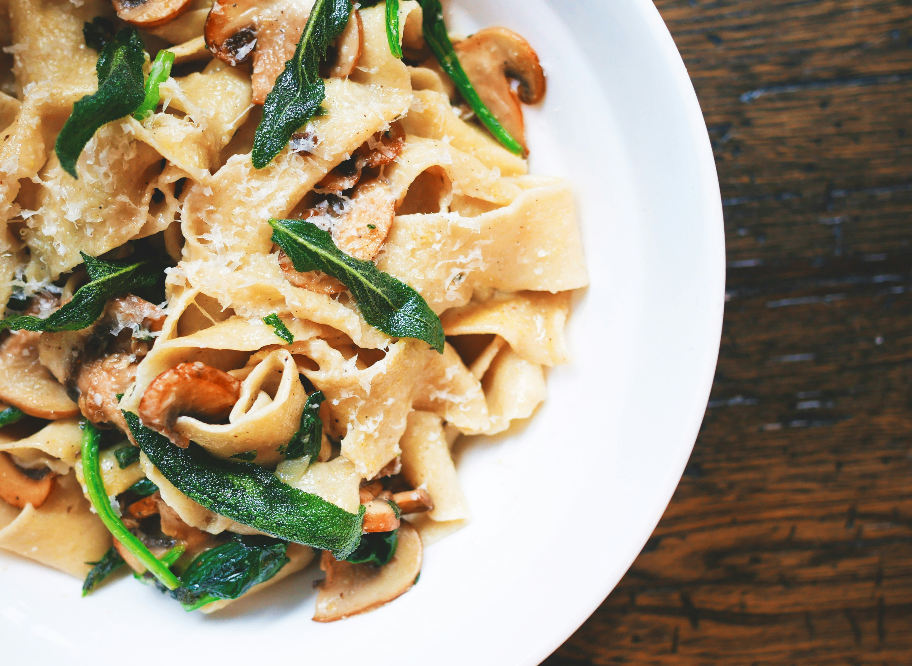

Pasta

Description
Crafting a classic homemade pasta dish begins with simmering a rich, glossy sauce where sweet, caramelized garlic and crushed tomatoes meld with fresh herbs like basil and oregano. Tossed directly into the hot sauce is al dente pasta, allowing the starched noodles to drink up the savory liquid and bind everything together into a cohesive, velvety coating. Finished with a generous grating of sharp Parmigiano-Reggiano and a final swirl of extra virgin olive oil, every twirl of the fork delivers a comforting balance of deep, savory flavor and hearty texture.
Ingredients
- Pasta (Spaghetti, fettuccine, or your favorite shape)
- Crushed Tomatoes or Marinara sauce
- Fresh Garlic (Minced)
- Extra Virgin Olive Oil
- Fresh Basil or Oregano
- Parmigiano-Reggiano (Freshly grated)
- Kosher Salt and Black Pepper
Steps
- Boil the Pasta: Bring a large pot of salted water to a rolling boil, add your pasta, and cook according to the package instructions until it is al dente.
- Sauté the Garlic: Heat extra virgin olive oil in a skillet over medium heat, then add your minced fresh garlic and sauté until fragrant and lightly golden
- Add the Sauce: Pour in your crushed tomatoes or marinara sauce, season with salt and pepper, and let it simmer until rich and slightly thickened.
- Combine Pasta and Sauce: Transfer your drained pasta directly into the simmering sauce, tossing well so the noodles absorb the flavors and the sauce coats every piece.
- Garnish and Serve: Plate your pasta hot, finish with a generous grating of fresh Parmigiano-Reggiano and a scattering of fresh herbs, and serve immediately
Home